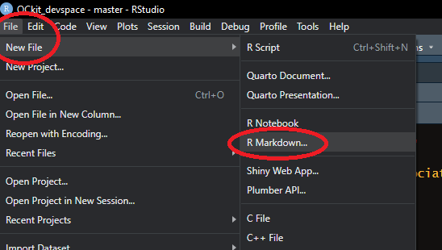

DRRs: Background
Purpose and Scope of Data Release Reports
DRRs are created by the National Park Service and provide detailed descriptions of valuable research datasets, including the methods used to collect the data and technical analyses supporting the quality of the measurements. Data Release Reports focus on helping others reuse data rather than presenting results, testing hypotheses, or presenting new interpretations and in-depth analyses.
About the DRR Template
Opening a new NPS DRR Template will write a folder to the current working directory that contains the an rmarkdown (.rmd) file that is the DRR Tempate, a references.bib file for bibtex references, a national-park-service-DRR,csl file for formatting references, and a sub-folder, BICY_Example with an example data package that can be used to knit an example DRR to .docx.
Upon submission for publication, the .docx file will be ingested by EXstyles, converted to an .xml file and fully formatted according to NPS branding and in compliance with 508 accessibility requirements upon final publication. The goal of this process is to relieve data producers, managers, and scientists from the burden of formatting and allow them to focus primarily on content. Consequently, the .docx generated for the publication process may not be visually appealing. The content, however, should focus on the production, quality, and utility of NPS data packages.
How to Start a DRR
To start your DRR you will need all of your data in flat .csv files. All quality assurance, quality control, and quality flagging should be completed. Ideally you have already created or are in the process of creating a data package (see the documentation associated with the R package EMLeditor for data package creation). All of the .csv files you want to describe in the DRR should be in a single folder with no additional .csv files (other files such as .txt and .xml will be ignored). This folder can be the same folder you used/are using to create a data package.
Using Rstudio, open an R project (Select: File > New Project…) in the same folder as your .csv files. If you already have an R project (.Rproj) initiated from creating a data package, you can use that same R project.
Install, update (if necessary), and load the QCkit R package. QCkit can be installed either as a component of the NPSdataverse or on its own. The benefits of installing the entire NPSdataverse is that upon loading the NPSdataverse, you will automatically be informed if there are any updates to QCkit (or any of the constituent packages). The downside to installing and loading the NPSdataverse is that the first time you install it the process can be lengthy (there are many dependencies) and you may hit the GitHub.com API rate limit. Either installation is from GitHub.com and requires the devtools package to install.
# Install the devtools package, if you don't already have it:
install.packages("devtools")
# Install and load QCkit via NPSdataverse:
devtools::install_github("nationalparkservice/NPSdataverse")
library(NPSdataverse)
# Alternatively, install and load just QCkit:
devtools::install_github("nationalparkservice/QCkit")
library(QCkit)- Open a new DRR Template. From within Rstudio, select the “File” drop down menu. Choose “New File >” and then “R markdown…”. This will open up a pop-up dialog box. Select “From Template” on in the right-hand list and choose the template labelled “NPS_DRR {QCkit}”. You can change the file and folder name to something other than “Untitled”, but if you do so the example DRR will not render properly. Click OK. A new folder will be generated in your current working directory titled, “Untitled” (or whatever name you have opted to call it).

After selecting “OK” two things will happen: First, you the DRR Template file will open up. It is called “Untitled.Rmd” by default. Second, a new folder will be created called “Untitled” (Unless you opted to change the default “Name:” in the “New R Markdown” pop up, then these will have whatever name you gave them).
Edit the DRR Template to reflect the data you would like to descibe and according to the instructions in the “Using the DRR Template” guide.
“knit” the .rmd file to Word when you are done editing it. Submit the resulting .docx file for publication (via a yet-to-be-determined process).